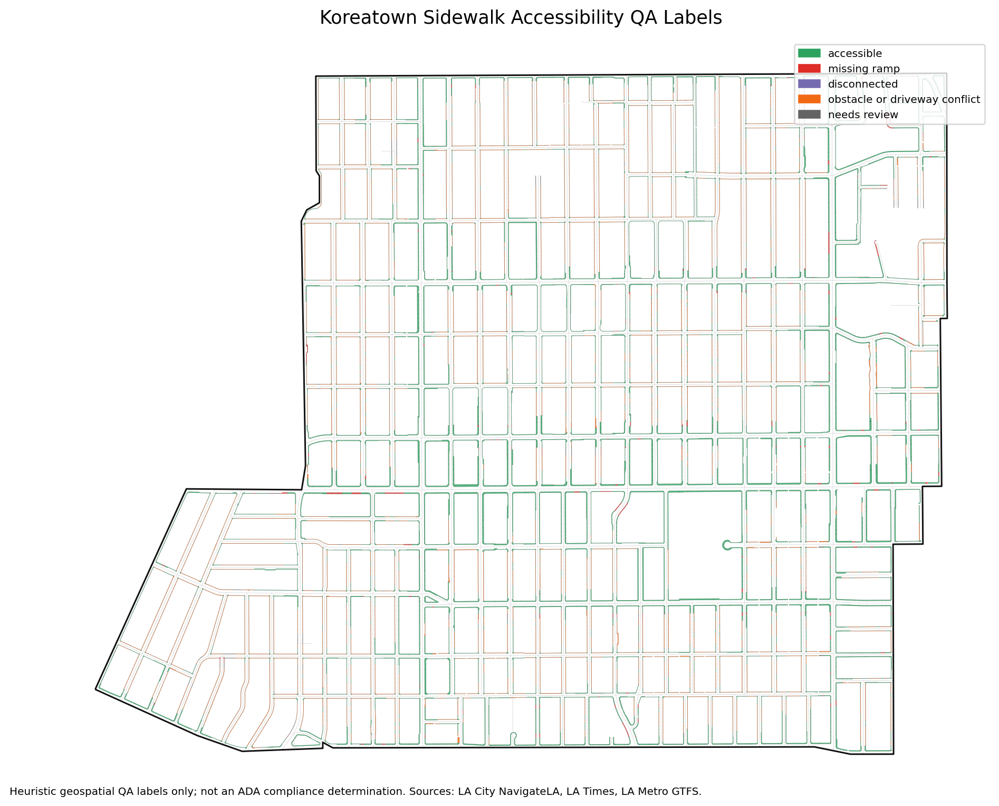
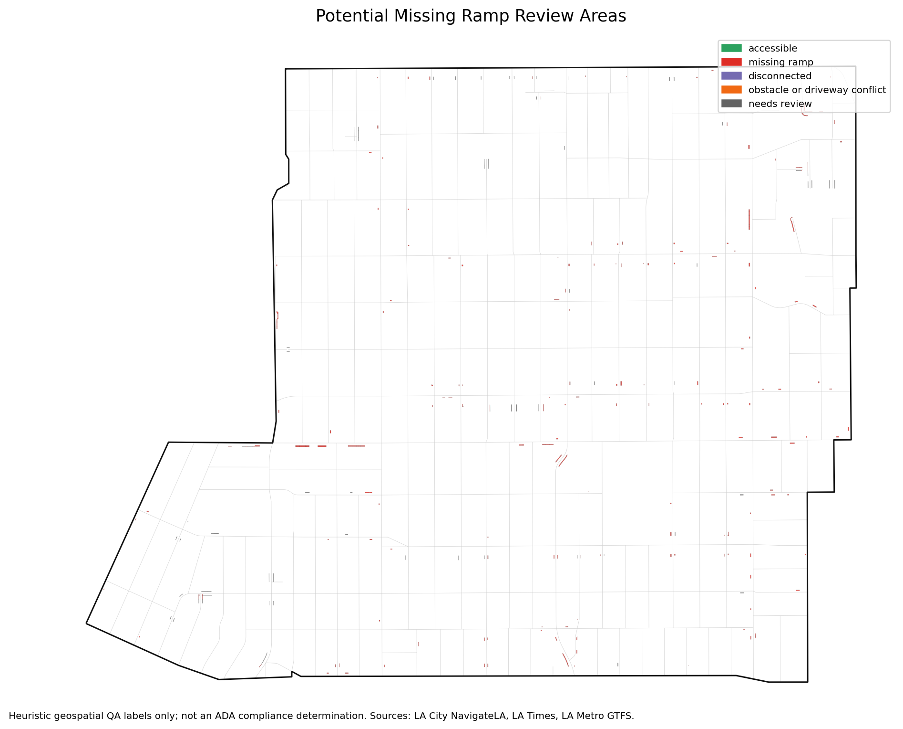
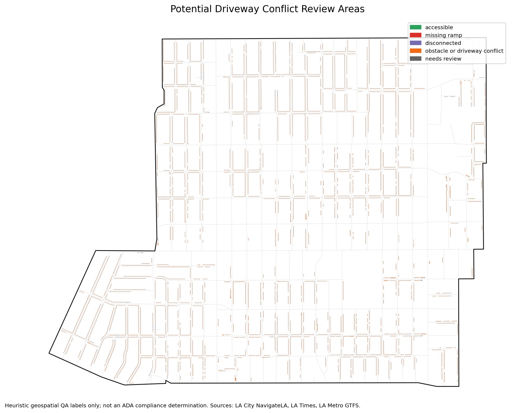
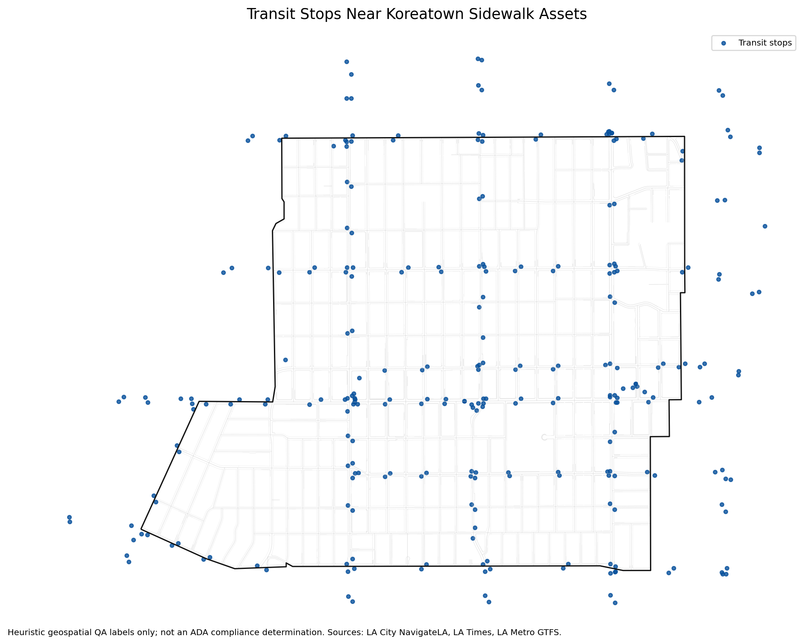
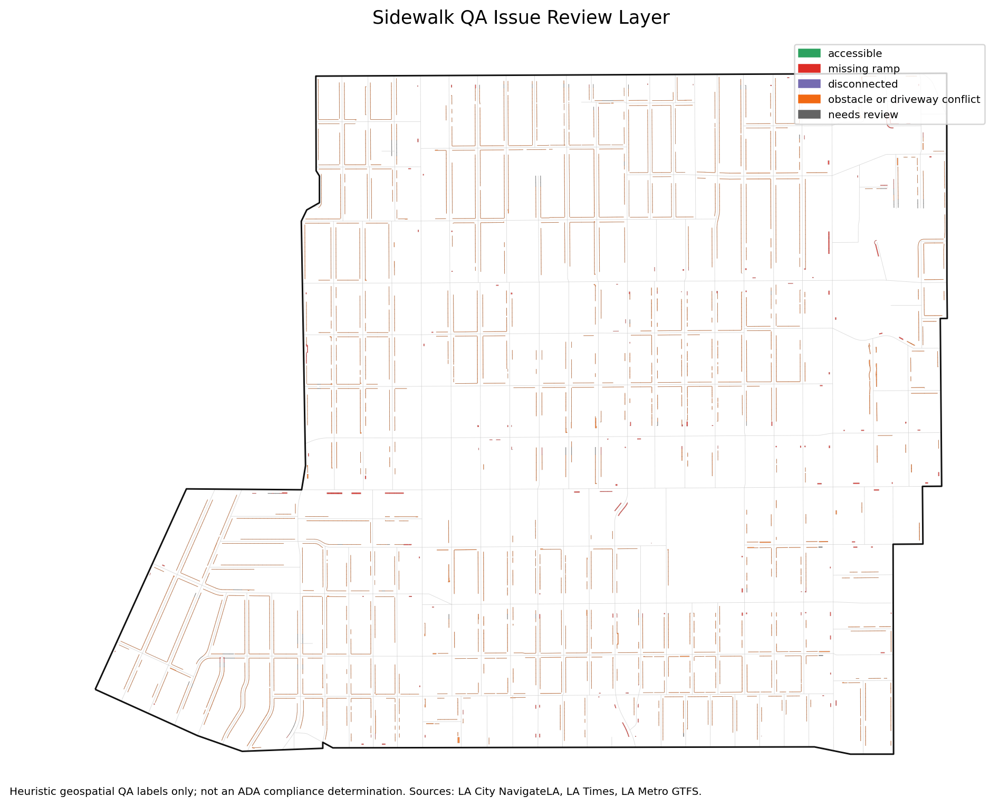

Data cleaning
Source layers are normalized to snake_case fields, clipped to Koreatown, checked for empty or invalid geometries, repaired when needed, deduplicated, and exported with source IDs preserved.
A QGIS-ready geospatial AI data-refinement project that turns public sidewalk, ramp, driveway, crosswalk, intersection, street, and transit data into transparent heuristic QA labels for Handshake AI, geospatial AI reviewers, and human-in-the-loop review workflows.
The project exports a multi-layer GeoPackage, labeled GeoJSON, static map images, QA tables, and a static Folium map. The labels are intentionally framed as review signals rather than certified accessibility or ADA findings.



The latest pipeline run downloaded live public data, clipped it to the Koreatown AOI, cleaned the geometries, and generated sidewalk-level heuristic labels.
| Metric | Value |
|---|---|
| Raw NavigateLA features | 51,664 |
| Clipped clean source features | 40,122 |
| Final sidewalk features labeled | 11,294 |
| Transit stops in or near AOI | 272 |
| Needs review percentage | 0.8% |
| Invalid / repaired / empty geometries | 0 / 0 / 0 |
| AI Review Label | Features |
|---|---|
| accessible | 6,982 |
| obstacle_or_driveway_conflict | 3,982 |
| missing_ramp | 240 |
| needs_review | 90 |
The workflow emphasizes reproducibility, CRS-safe spatial analysis, transparent issue flags, and export formats that can be opened directly in QGIS.
Source layers are normalized to snake_case fields, clipped to Koreatown, checked for empty or invalid geometries, repaired when needed, deduplicated, and exported with source IDs preserved.
Sidewalk polygons are enriched with nearest ramp, confirmed ramp, intersection, crosswalk, transit stop, and driveway-overlap metrics using metric CRS calculations.
Issue flags drive the final label priority: needs review, missing ramp, disconnected, driveway conflict, then accessible. All label reasons remain visible in the output attributes.
Transit stops from Metro bus and rail GTFS are clipped to a buffered AOI so reviewers can see which labeled sidewalk assets are near mobility access points.


The pipeline records source URLs, feature counts, timestamps, and errors in metadata outputs so reviewers can audit where each layer came from.
stops.txt into a transit stop point layer.